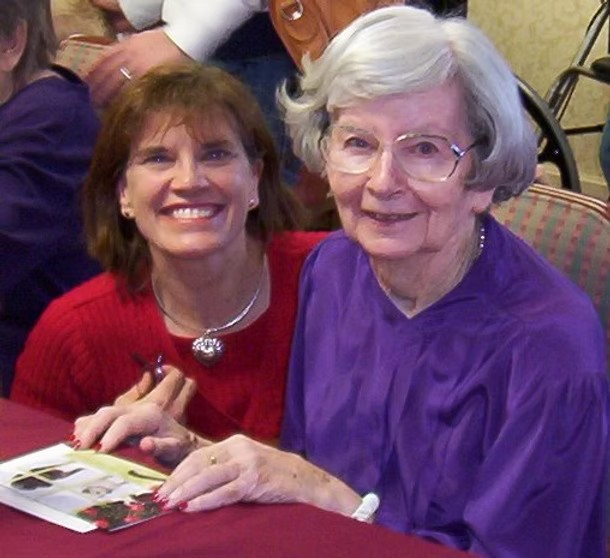

Founded in 2006 to walk alongside families navigating aging, illness, and disability, with the dignity every loved one deserves.
In 2001, Angela Thomas's family found themselves caring for Aunt Grace, who was living with Alzheimer's Disease. Through years of joys and challenges, with many lessons learned the hard way, Angela realized that even her nursing background didn't make it easy.
In 2006, Caring with Grace was founded so that other families wouldn't have to navigate the same road alone. Twenty years later, the company carries Grace's name and Angela's mission forward, guiding families through the complexities of care with expertise, compassion, and continuity.

MSN, RN, CMC
Angela is a master's trained nurse with over 40 years of experience, earning her BSN and MSN from the University of Pennsylvania School of Nursing. In 2006 she founded Caring with Grace in Dallas to help seniors, adults with disabilities, and their families navigate the challenges of aging: care conferences, placement in the right living and care environments, complex hospital systems and, when the time comes, palliative and hospice care.
A recognized leader among Aging Life Care Professionals®, Angela was named a Fellow of the Leadership Academy by the Aging Life Care Association® in 2016, served four years as a Director on its National Board, is past president of its South Central Chapter, and co-chairs its Public Policy Committee today. She also holds care management certification through the National Academy of Certified Care Managers, speaks frequently at community events on aging, and is a long-time member of the Dallas Area and Tarrant Area Gerontological Societies.
"I now proudly observe my team's heart for serving their clients, a focus on loyalty to our clients, and a desire for collaborating with all involved in our client's care. This values-centered approach creates high quality work that leaves a lasting impact on those we serve."Meet the Full Team →
If any of this resonates, we'd love to hear from you. Initial conversations are free.
Contact Our Team